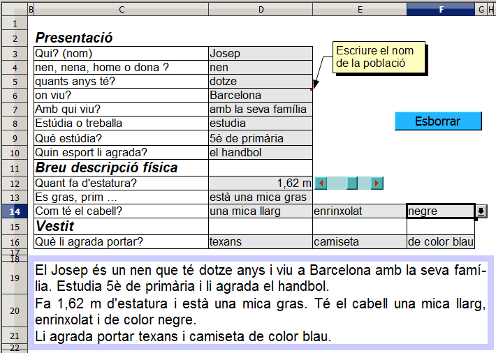
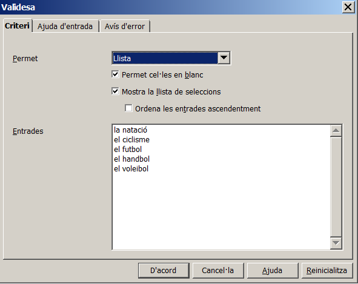

Presentació gràfica de l'activitat

Funcions que es fan servir en aquesta activitat
Objectiu de l'activitat
Fer una breu descripció partint d'una pauta de preguntes.
Desenvolupament de l'activitat
1. Obrir el fitxer M4 i afegir un nou full amb el nom de M4P9 expressió escrita.
2. Escriure a la cel·la I3: =SI(O(D4="nen";D4="noi";D4="xiquet";D4="home");"El ";"La ")&D3
El pas 2 serveix per triar l'article El o l'article La
3. Escriure a la cel·la
J3:
=MIG(I3;1;2)
El pas 3 serveix de base per triar l'expressió "és un" o "és una" de la fórmula que hi ha al pas 4.
4. Escriure a la cel·la
I4:
=SI(J3="El";" és un "&D4;SI(J3="La";" és una "&D4))
5. Escriure a la cel·la
I5:
=" que té "&D5&" anys"
6. Inserir una
nota/comentari a la cel·la
D6 en la qual hagi escrit: “Escriure el nom de la població”
Per inserir un comentari, anar al menú i clic en Insereix | Comentari i escriure-hi el comentari a la bafarada mostrada. En haver-ho fet, observar que es veu un petit quadradet de color vermell al vertex superiro dret del rectangle. En passar el punter del ratolí per la cel·la, es mostra el comentari escrit.
7. Escriure a la cel·la
I6:
=" i viu a "&D6
8. Escriure a la cel·la
I7:
=" "&D7&"."
9. Escriure a la cel·la
I8:
=" "&INICIALMAJUSC(D8)&" "
10. Escriure a la cel·la
I9:
=D9
11. Escriure a la cel·la
I10:
=" i li agrada "&D10&"."
12. Validar la cel·la
D10 perquè mostri un llistat de paraules de les quals es pugui triar-ne una.
Per validar una cel·la amb un llistat, fer el següent:
De la barra de menú, anar Dades | Validesa| i clic a la solapa Criteri
Clic al desplegable per triar llista.
Escriure la següent llista de paraules a la finestra del bloc Entrades:.
la natació
el ciclisme
el futbol
el handbol
el voleibol

13. Situar a la cel·la
E12 una barra desplaçament i enllaçar-la amb la cel·la
J12. Aquesta barra servirà per escriure l'altura.
14. Escriure a la cel·la
D12:
=1+(J12/100) i formatar-la perquè aquesta cel·la mostri dos decimals.
15. Escriure a la cel·la
I12:
="Fa "&D12&" m d'estatura"
16. Escriure a la cel·la
I13:
="i "&D13
17. Copiar la cel·la
D10 a la cel·la
D13 i al llistat escriure el seguent:
18. Copiar la cel·la D10 a la cel·la D14 i al llistat escriure el seguent:
una mica llarg
llarg
una mica curt
curt
ni llarg ni curt
19. Copiar la cel·la D10 a la cel·la E14 i al llistat escriure el seguent:
enrinxolat
una mica enrinxolat
ondulat
una mica ondulat
llis
20. Copiar la cel·la D10 a la cel·la F14 i al llistat escriure el seguent:
21. Escriure a la cel·la I14: ="Té el cabell "&D14
22. Escriure a la cel·la J14: =" "&E14
23. Escriure a la cel·la K14: =" i de color "&F14&"."
24. Copiar la cel·la D14 a la cel·la D16 i al llistat escriure el seguent:
texans
xandall
pantalons curts
pantalons llargs
25. Copiar la cel·la D14 a la cel·la E16 i al llistat escriure el seguent:
26. Copiar la cel·la D14 a la cel·la F16 i al llistat escriure el seguent:
de color blau
de color verd
de color marró
27. Escriure a la cel·la I16: ="Li agrada portar "&D16&" i "
28. Escriure a la cel·la J16: =E16&" "
29. Escriure a la cel·la K16: =F16
30. Escriure a la ce·la C19: =SI(O(D3="";D4="";D5="";D6="";D7="";D8="";D9="";D10="");"";I3&I4&I5&I6&I7&I8&I9&I10)
Amb el primer argument d'aquesta fórmula
O(D3="";D4="";D5="";D6="";D7="";D8="";D9="";D10="") no es permet mostar res a la cel·la C19 fins que no hagi quelcom escrit en cada una de les cel·les del rang D3:D10
31. Fusionar les cel·les del rang
C19:G19
32. Escriure a la cel·la
C20:
=I12&" "&I13&". "&I14&","&J14&K14
33. Fusionar les cel·les del rang
C20:G20
34. Escriure a la cel·la
C21:
=I16&J16&K16&"."
35. Fusionar les cel·les del rang
C21:G21
36. Fer una macro amb les següent funcions:
Esborrar les cel·les del rang D3:D16 menys la cel·la D12
Esborrar les cel·les del rang E14:F16
Que la cel·la D3 rebi el focus.
37. Crear un botó de prémer de Controls de formulari i assignar-li la macro feta anteriorment.
38. Protegir les cel·les que convingui.
39. Ocultar les cel·les que convingui.
40. Comprovar que l'activitat funcioni correctament.
41. Desar el fitxer M4.